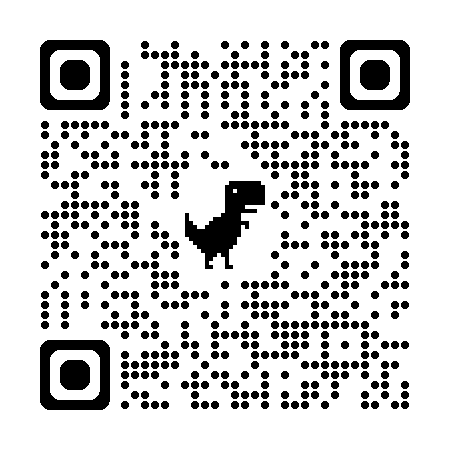

Sua solidariedade alimenta a esperança de quem mais precisa 💙
Data: 20/06
Horário: Das 09h às 13h

Escaneie o QR Code ou copie a chave PIX abaixo:
Cada contribuição recebida é transformada em alimentos para famílias que enfrentam dificuldades financeiras. Com sua ajuda conseguimos ampliar o alcance de nossas ações sociais e levar dignidade para quem mais precisa.
Transparência, compromisso e solidariedade são os pilares da nossa missão.